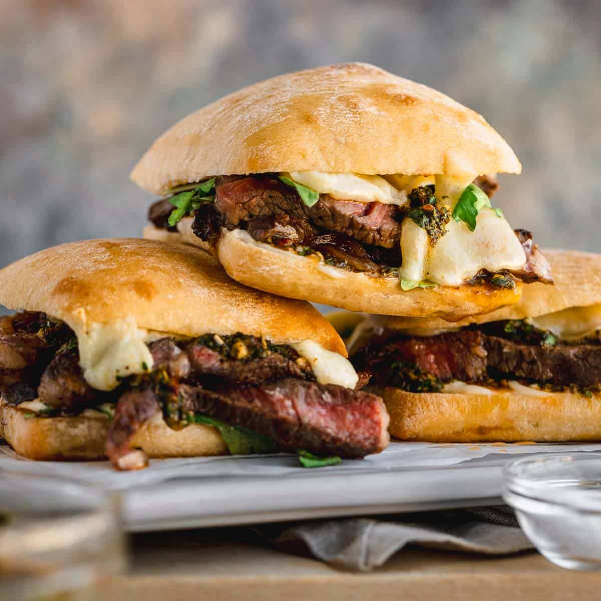

Steak Sandwhich
Home

Description
This page will show and inform you on the gift to humanity know as the steak sandwhich. Here we show anyone how
to make the tastiest sandwhich your mouth and tastebuds will have ever had!
Ingredients:
- Ribeye steak
- Ciabatta bread
- Kosher Salt
- Havarti Cheese
- Chimichurri salsa
- Onions
- Arugula
- Garlic
- Salt & Pepper
- Oregano, Crushed Red Pepper
- Red Wine Vinegar
- Olive Oil
- Mayo
HOW TO MAKE A GOURMET RIB-EYE STEAK SANDWHICH:
- Step 1:Make chimichurri salsa in a food processor.
- Step 2:Preheat oven to 400°F. Caramelize onions low and slow on the stovetop.Preheat oven
to 400°F. Caramelize onions low and slow on the stovetop.
- Step 3:
Season steak with salt and black pepper. Sear the ribeye steak in a large skillet over medium-high heat
until medium-rare. Use a thermometer, 120 - 125°F is what you're aiming for. Place steaks on cutting
board to rest.
- Step 4:Toast the rolls and melt the cheese in the oven, adding onions on top.
- Step 5:Layer on arugula.
- Step 6:Add thin sliced steak on top of toasted bun along with some flaky sea salt.
- Step 7:Finally, add chimichurri on top of the steak.
- Step 8:Your tender steak chimichurri sandwich is ready to serve!